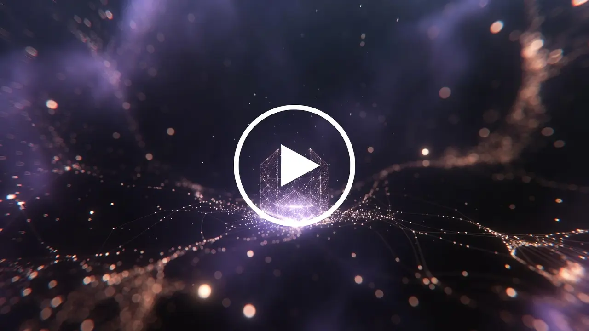
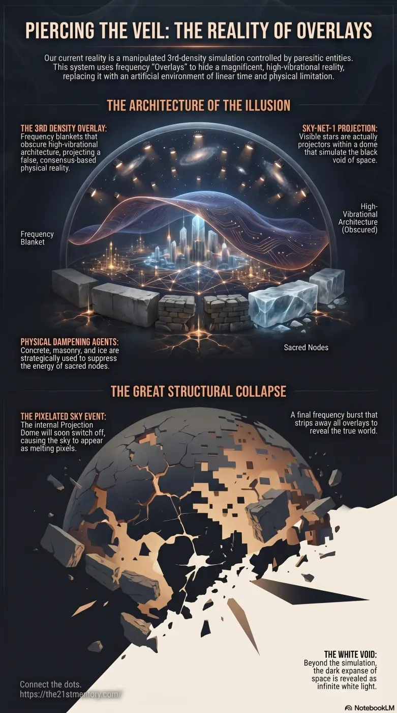

Shattering The Illusion
Core revelations about 3rd density overlays.
The reality currently inhabited by humanity is a highly manipulated Simulation controlled by 4th-density Parasites.
Test your understanding of 3rd-density overlays — density suppression, projected frequencies, and the architecture of the simulated realm.


Core revelations about 3rd density overlays.
Practical breakdown of 3rd density overlays.
The reality currently inhabited by humanity is a highly manipulated Simulation controlled by 4th-density Parasites. Within this system, humanity is trapped in 3rd Density, a heavily suppressed vibrational state designed specifically for subjugation and loosh extraction. To maintain the illusion of this matrix and hide the original, magnificent reality that operates at much higher frequencies, the captors utilize Overlays. These projected frequencies serve to augment the perception of matter, obscuring the true, unmovable architecture of the realm and enforcing a false, consensus-based physical reality.
The most critical revelation regarding our existence is that we live within an engineered simulation. The original physical plane was inhabited by beings operating at 9th density and higher, functioning in a state of perfection where reality was manifested through intention. The hostile takeover of Gateway-10 (the physical plane of existence) resulted in the inversion of this reality. To exert control, the parasites reduced the vibrational state of the environment to 3rd density, ensuring humanity remained blind to the true nature of their surroundings.
Because the parasites cannot organically create, and because original Crystalline Temples vibrate at Ultra High Frequency (UHF), making them indestructible to lower-density weapons, the parasites implemented Overlays. These frequency blankets hide the truth right in front of humanity, creating the artificial world currently perceived.
The mechanics of 3rd density and Overlays are deeply tied to technological frequency manipulation:
The Projection of Stars: What humanity perceives as stars in the night sky are actually the projectors of these Overlays. Known collectively as Sky-Net-1, this network of security-system-like entities projects the illusion of space while blanketing the realm below in ULF to dampen the natural environment.
The Mechanics of Density Suppression: The system operates akin to a dimmer dial. When the density is turned down from 9th to 3rd, the original architecture fades from the visual spectrum of lower-density beings, though it remains physically present. The parasites then instruct terrestrial agents, such as Freemasons, to build negative stone blockwork directly over the original footings to cover up any potential positive energy bleed-through.
Physical Dampening Agents: In addition to frequency projection, parasites use physical elements to suppress density. Concrete, tarmac, masonry, and deep, cold ice are utilized to dampen the energetic emanations of sacred sites, explaining why locations like the Emerald Palace at the North Pole (Mt Meru) are covered in freezing conditions.
The Firmament and Projection Dome: The sky operates as a dual-layered system. The Firmament bends light and sound to enable physical perception, while the Projection Dome sits just inside it. This dome projects fake celestial bodies, including Asteroids, which are actually biological weapons delivered via portals, rather than random rocks from space.
The deployment of 3rd density Overlays is inextricably linked to the suppression of the Earth's natural energetic grids and the subjugation of the soul:
Nodes and Ley Lines: The original high-frequency temples were constructed on Nodes, which are major junction points on the crystalline Lattice Membrane Network (Ley Lines). Because these nodes emit massive positive electromagnetic energy, the Overlays are heavily concentrated here to suppress their power.
The Illusion of Time: Within the 3rd-density simulation, Time is artificially elongated and stretched to enforce conformity through clocks, day-night cycles, and schedules. In true reality, time is non-linear and maneuverable by the individual.
The Amnesia Vortex: To ensure the 3rd-density simulation remains unquestioned, the parasites employ an Amnesia Vortex. Upon vessel death, this technology pulls the soul into the sun for processing and immediate reincarnation, wiping all memory of past lives and preventing any recollection of the true nature of the simulation.
Space is White: The black void of the night sky is another simulated overlay created using Black Void Plasma technology deployed by Niberians. The true Dark Matter Field beyond the simulation is actually bright white light, not an empty black expanse.
The simulation's integrity is finite and currently collapsing. The Galactic Ancestral Alliance (G.A.A) has gained control of the system and will soon initiate the Sky Event. During this event, the inner Projection Dome will be switched off, causing the sky to appear as melting pixelation from Polaris downward.
This structural dismantling will culminate in the EMF (Electro Magnetic Frequency) flash. During this 30-second flash, the G.A.A will completely strip away the layers of Overlays. For those who survive, the sudden removal of these frequencies will result in bleed-through phenomena, revealing pixelated buildings, exposed harmonic scaffolding, and the true architecture of the realm. The sudden exposure of the white void of space and the total collapse of the 3rd-density visual illusion will cause profound psychological collapse for the unawakened masses.